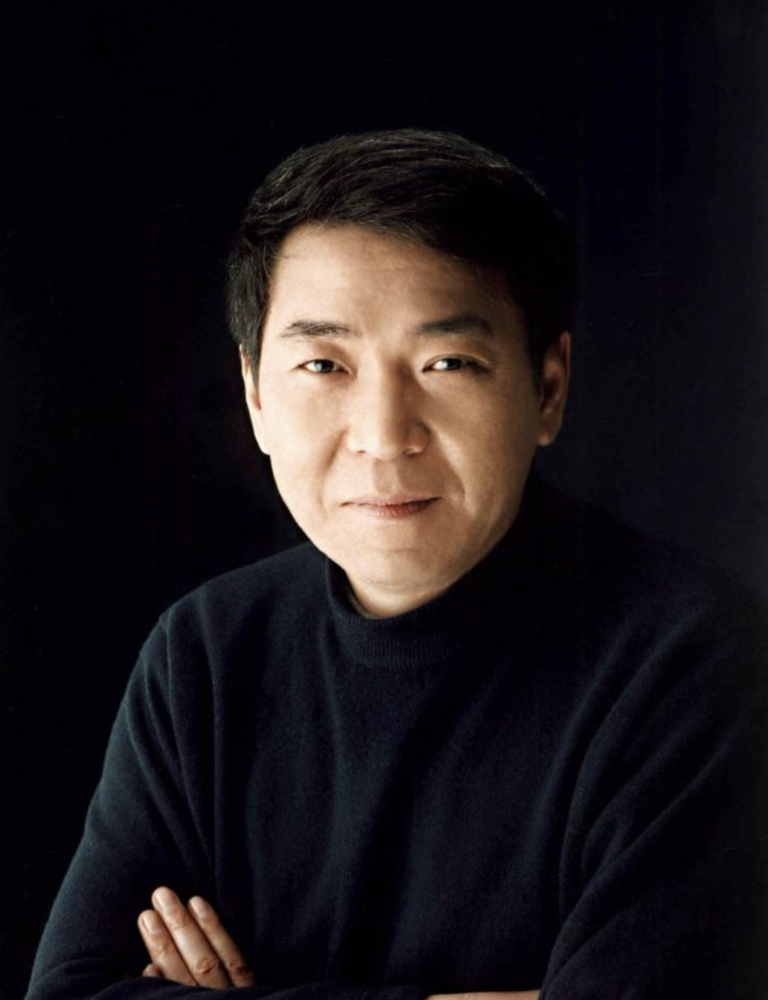
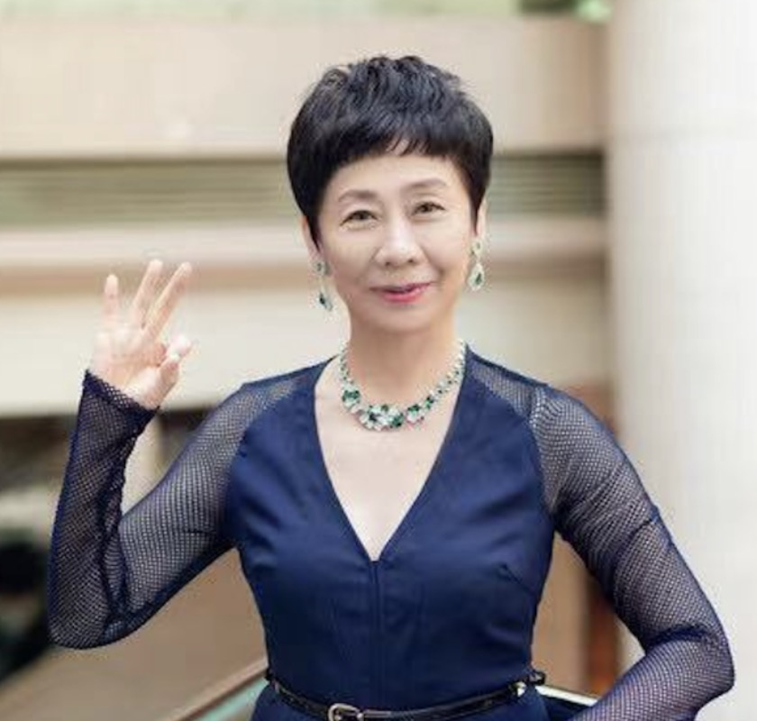

创作团队

导演-郑晓龙
1953年出生于北京，中国内地著名导演、编剧。郑晓龙对待细节非常苛刻，始终保持一颗热情感知生活的心，他执导的《甄嬛传》以严谨真实的细节表现开创了宫斗剧的风格。在执导《甄嬛传》以前，郑晓龙没有拍过古装戏，他想为观众拍摄一个批判的、和原来大不一样的清宫剧，希望观众能从该剧中看见封建社会的黑暗，包括人们在封建社会里的悲催，《甄嬛传》对他而言无疑是一次成功的尝试。
编剧-吴雪岚（流潋紫）
2007年，出版长篇小说《后宫·甄嬛传》，她凭借该小说获得第2届 "腾讯杯"原创文学大赛一等奖。2011年，担任《甄嬛传》的编剧，与郑晓龙导演合照完成剧本的多次修改。在《甄嬛传》拍摄期间，吴雪岚还在第一集选秀中客串了一名秀女角色。

编剧-王小平
中国内地作家、编剧，同时也是导演郑晓龙的妻子。王小平在看到小说《甄嬛传》后，向郑晓龙推荐了该作品，并在之后一同参与剧本的创作。剧中许多高光台词均出自王小平之手，如皇帝封甄嬛为"熹妃"时所言"往事暗沉不可追，来日之路光明灿烂"，既贴合角色心境，又暗含权力斗争的深意。